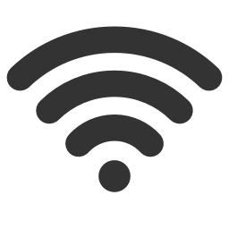
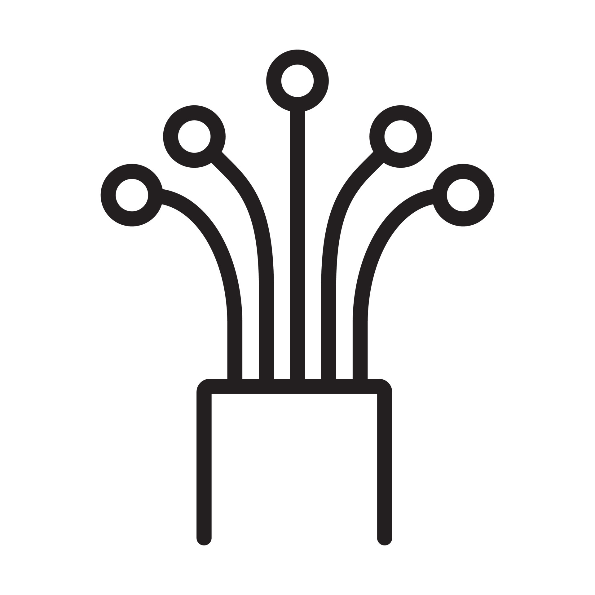

Seguridad Electrónica
En IT Solutions, nos especializamos en ofrecer soluciones integrales de seguridad para proteger lo que más te importa. Nuestros servicios técnicos de cámaras y alarmas están diseñados para proporcionar tranquilidad y seguridad tanto a hogares como a negocios o empresas. Ofrecemos productos de alta calidad adaptándonos a las necesidades específicas de cada cliente. Confía en nosotros para mantener tu entorno seguro y protegido las 24 horas del día, los 7 días de la semana.

Video Seguridad
- Instalación de cámaras.
- Asistencia técnica a domicilio y remoto.
- Configuración para vista remota en multiples dispositivos.
- Asesoramiento de ventas.
Alarmas
- Instalación de centrales y sensores.
- Asistencia técnica a domicilio y remoto.
- Configuracion de dispositivos para monitoreo de alertas.
- Trabajamos con la ultima generación de alarmas.
Control de Acceso
y Horario
- Instalacion y configuracion de controles de acceso.
- Configuracion de software para controles de horarios de empleados.
- Asistencia técnica a domicilio y remoto.
Servicio Técnico de Computadoras
En IT Solutions, proporcionamos servicios técnicos especializados en la reparación y mantenimiento de computadoras, así como en el armado de equipos a medida que se ajustan perfectamente a tus requerimientos.
Armado de PC
- Armamos tu PC a medida segun tus necesidades.
- Asistencia técnica a domicilio o remoto.
- Asesoramiento.
- Venta de partes.

Service PC
- Reparamos problemas de hardware o software.
- Asistencia técnica a domicilio o remoto.
- Limpieza de virus.
- Optimizacion de PC o notebooks.
Redes de Datos
En IT Solutions, somos líderes en ofrecer soluciones completas y avanzadas para la infraestructura de redes de datos en empresas. Nuestro equipo de profesionales altamente capacitados se especializa en la planificación, diseño e implementación de redes de datos robustas y eficientes.
Redes LAN
- Armado de redes cableadas para empresas.
- Asistencia técnica a domicilio y remoto.
- Cableado estructurado.

Redes WiFi
- Instalación y configuración de extensores y access point.
- Asistencia técnica a domicilio y remoto.
- Instalamos redes inalámbricas seguras y de amplio alcance.

Fibra Optica
- Asesoramiento.
- Vente de insumos.
- Asistencia técnica a domicilio y remoto.